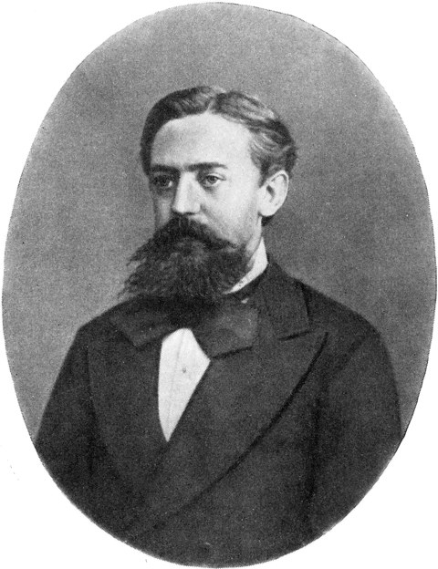
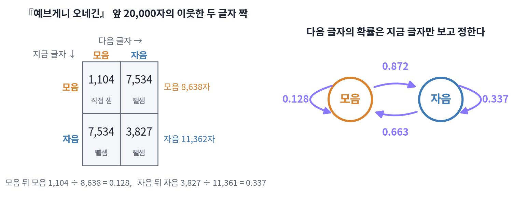
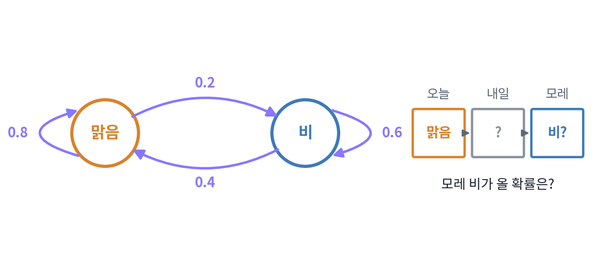
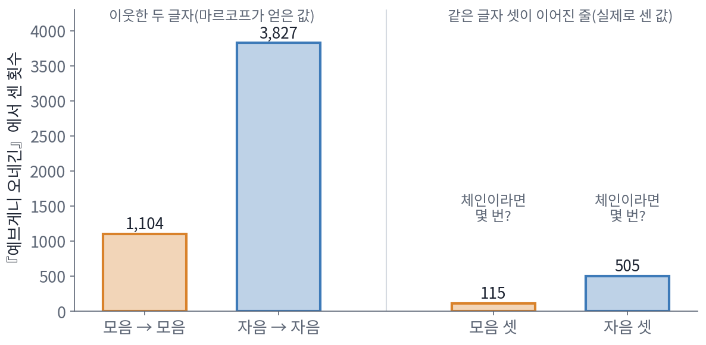
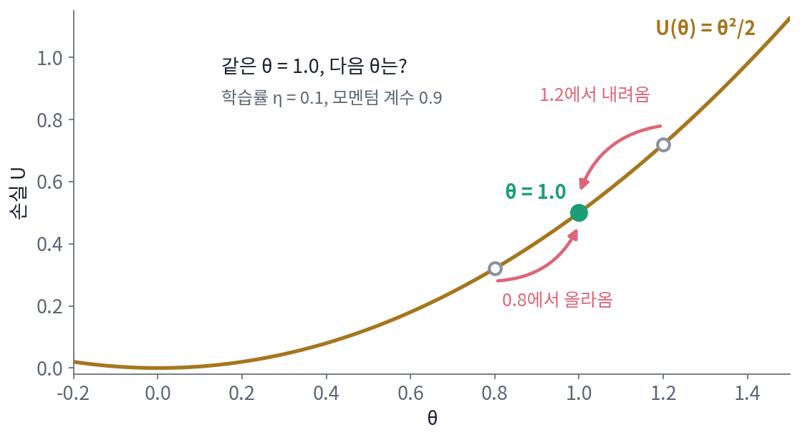

8장 — 마르코프 체인과 에르고드성
이 장의 물음
언어 모델은 글을 한 토큰씩 뽑는다. 다음 토큰의 확률은 앞에 나온 토큰들이 정하므로, 이렇게 뽑은 토큰들은 서로 독립이 아니다. 「그러므로」 뒤에는 결론이 오기 쉽고, 마침표 뒤에는 새 문장의 첫 낱말이 온다. 베이즈 신경망의 사후분포(데이터를 본 뒤 가중치가 어떤 값일지를 확률로 적은 분포)에서 샘플을 뽑는 샘플러도 비슷하다. 지금 샘플을 조금 바꿔 다음 샘플을 만들기 때문에, 이웃한 두 샘플은 거의 같은 값이다. 그런데 우리는 이런 샘플들을 아무렇지 않게 평균 낸다. 모델이 쓴 글 수천 편에서 어떤 낱말이 나온 비율을 세고, 샘플러가 내놓은 가중치 수만 개를 평균해 예측을 만든다.
동전을 많이 던지면 앞면의 비율이 참값 근처로 모인다는 큰 수의 법칙도, 앞면 비율이 참값을 가운데에 두고 종 모양(정규분포)으로 퍼진다는 중심극한정리도 동전끼리 서로 영향을 주지 않는다는 가정 위에 서 있었다. 앞의 결과가 뒤의 결과를 바꾸는 샘플에서도 평균은 참값으로 모일까, 모인다면 어디로 얼마나 빨리 모일까?
물음이 하나 더 있다. 볼츠만 분포 pᵢ = e^(−βEᵢ)/Z에서 샘플을 뽑으려면 정규화 합 Z가 있어야 할 것 같다. 그러나 스핀 100개만 되어도 배치(스핀 하나하나가 위인지 아래인지를 빠짐없이 적은 목록)가 2^100 ≈ 1.3 × 10^30가지라서 Z를 더할 길이 없다. 확률의 비는 알지만 확률 그 자체는 모를 때, 어떻게 그 분포에서 샘플을 뽑을까?
이 장은 다음 물음에 차례로 답한다.
- 다음 결과가 지금 결과에만 기대는 과정은 어떻게 적을까?
- 그런 과정을 오래 돌리면 처음에 어디서 시작했는지를 잊을까?
- 결과들이 서로 독립이 아니어도 평균은 참값으로 모일까? 모이지 않는 경우는 언제일까?
- Z를 모르는 볼츠만 분포에서 샘플을 뽑는 규칙은 어떻게 만들까?
- 카드는 몇 번 섞어야 충분히 섞였다고 할 수 있을까?
- 앞 토큰 수천 개를 보는 언어 모델도 「지금만 보고 다음을 정하는」 과정일까?
마르코프 체인: 다음은 지금만 보고 정한다
동전 던지기에서는 앞면이 열 번 연달아 나와도 다음 동전이 앞면일 확률은 그대로 1/2이다. 글자는 그렇지 않다. 영어에서 q 뒤에는 거의 늘 u가 오고, 한국어에서 「습니」 뒤에는 「다」가 오기 쉽다. 앞 글자가 다음 글자를 바꾸는 이런 글자 줄에서는 동전처럼 「서로 영향을 주지 않는다」고 가정할 수 없다. 그렇다면 서로 영향을 주고받는 글자들은 무엇으로 적을까? 앞에 나온 모든 글자를 다 기억해야 할까, 아니면 바로 앞 글자 하나만 알아도 될까?
역사: 네크라소프와 마르코프의 논쟁
서로 영향을 주는 사건들의 평균도 참값으로 모이느냐는 물음은 1900년대 초 러시아의 두 수학자가 벌인 논쟁에서 셈의 대상이 되었다. 모스크바의 파벨 네크라소프는 1902년 논문에서, 많이 모아 평균을 내면 참값 근처로 모이는 큰 수의 법칙이 성립하려면 하나하나의 사건이 서로 독립이어야 한다고 주장했다. 그는 이 주장을 자유 의지를 옹호하는 데까지 끌고 갔다. 사회 통계의 평균이 해마다 거의 일정하니 그 밑의 사람들의 선택은 서로 독립이고, 그 독립이 자유 의지를 보여 준다는 것이다.
상트페테르부르크의 안드레이 마르코프는 이 논증의 수학이 틀렸다고 보았는데, 독립은 큰 수의 법칙이 성립하기 위한 충분조건일 뿐 필요조건이 아니라는 것이었다. 그는 1906년 카잔 대학교 물리수학회 논문집에 낸 논문 「서로 기대는 양으로 넓힌 큰 수의 법칙」에서, 각 결과가 바로 앞 결과에 따라 확률이 달라지는 경우에도 평균이 한 값으로 모인다는 것을 증명했다. 네크라소프의 주장에 맞서, 서로 영향을 주는데도 큰 수의 법칙이 성립하는 반례를 직접 만들어 보였다.

마르코프는 이 생각을 실제 글에 대 보고, 그 결과를 1913년 1월 23일 상트페테르부르크 학술원에서 발표했다. 푸시킨의 운문 소설 『예브게니 오네긴』의 첫째 장 전체와 둘째 장의 16연, 모두 2만 자를 띄어쓰기와 문장 부호, 소리가 없는 두 부호 ъ와 ь를 빼고 옮겨 적은 뒤, 10 × 10 칸의 표 200장에 100자씩 나눠 채우고 모음과 자음을 하나하나 센 것이다. 모음은 8,638자, 자음은 11,362자였고, 그는 여기서 그치지 않고 이웃한 두 글자의 짝을 보았다. 직접 센 것은 모음 뒤에 모음이 온 짝 1,104번뿐이었고 나머지는 뺄셈으로 얻었다. 모음 뒤에 자음이 온 짝은 8,638 − 1,104 = 7,534번이고, 자음 뒤에 모음이 온 짝도 같은 7,534번으로 놓았다. 마지막 글자 하나는 뒤에 이어지는 글자가 없으므로 자음 뒤에 글자가 이어진 것은 11,361번이고, 그 가운데 자음이 온 짝은 11,361 − 7,534 = 3,827번이다.

2만 자에서 모음 뒤에 모음이 온 짝을 세는 건 지금이면 파이썬 한 줄이에요. 1초도 안 걸려요.

그 한 줄을 돌리려면 먼저 무엇이 있어야 하죠?

아, 글이 파일로 있어야죠. 1913년에는 『오네긴』을 띄어쓰기와 부호를 빼고 옮겨 적는 것부터 손으로 해야 했겠네요.
그래요. 그렇게 옮긴 2만 자를 10 × 10 칸의 표 200장에 채워 하나하나 셌어요. 그런데 직접 센 짝은 모음 → 모음 1,104번뿐이었죠.

나머지 세 가지 짝은 뺄셈으로 얻었으니까, 표 200장을 짝마다 다시 훑지 않아도 됐겠네요.

모자란 건 손만이 아니었어요. 네크라소프가 1902년에 독립이어야 평균이 모인다고 주장할 때, 서로 기대는 사건의 큰 수의 법칙은 아직 아무도 증명하지 못했어요. 마르코프가 1906년에 처음 증명했고, 1913년에 그걸 실제 글에 대 본 거예요.

그럼 이 네 수에서 「모음 다음에 모음이 올 확률」은 어떻게 읽어 내요? 모음이 전체에서 차지하는 비율과는 다를 것 같은데요.
모음 뒤에는 무엇이 오나
마르코프가 센 수를 확률로 바꿔 보자. 모음은 8,638자이고 그 뒤에 모음이 온 것이 1,104번이므로, 모음 다음 글자가 모음일 확률은 1,104 ÷ 8,638 = 0.128이다. 자음 뒤에 글자가 이어진 11,361번 가운데 자음이 온 것이 3,827번이므로, 자음 다음 글자가 자음일 확률은 3,827 ÷ 11,361 = 0.337이고 모음일 확률은 나머지 0.663이다. 글자들이 서로 독립이라면 두 값은 모두 전체에서 모음이 차지하는 비율 8,638 ÷ 20,000 = 0.432여야 한다. 실제로는 모음 뒤에서는 그보다 훨씬 작고 자음 뒤에서는 훨씬 커서, 러시아어 글자에는 모음과 자음이 번갈아 오려는 경향이 뚜렷하다는 것을 알 수 있다.

이 두 숫자만 있으면 모음과 자음으로 된 가짜 글을 얼마든지 만들 수 있다. 지금 글자가 모음이면 0.128의 확률로 모음을, 나머지 0.872의 확률로 자음을 뽑는다. 지금 글자가 자음이면 0.663의 확률로 모음을 뽑고, 다음 글자를 정할 때 그 앞의 글자들은 보지 않는다. 이렇게 다음 상태를 뽑는 확률이 지금 상태에만 달려 있고 그 이전의 상태들에는 달려 있지 않은 과정을 마르코프 체인 (지금만 보고 다음을 뽑는 과정, Markov chain)이라 한다. 줄여서 「체인」이라고도 쓴다. 체인이 놓일 수 있는 자리(여기서는 모음과 자음)를 상태라 하고, 지금 상태에서 다음 상태로 옮겨 가는 확률을 모두 모은 표를 전이 행렬(transition matrix)이라 한다.
행마다 합이 1인 것은 지금 상태가 무엇이든 다음 상태는 둘 가운데 하나이기 때문이다. 글자를 x₀, x₁, x₂, …로 적으면, 체인의 성질은 「x₁, …, xₙ을 모두 알 때 xₙ₊₁의 확률 = xₙ만 알 때 xₙ₊₁의 확률」이라는 한 줄로 적힌다. 앞의 글자들이 다음 글자에 주는 영향은 모두 바로 앞 글자 하나를 거쳐서만 전해진다는 뜻이다.
두 스텝 뒤도 이 표 하나로 정해진다. 지금이 모음일 때 두 글자 뒤가 모음이려면, 모음 → 모음 → 모음으로 가거나(0.128 × 0.128 = 0.016) 모음 → 자음 → 모음으로 가야 한다(0.872 × 0.663 = 0.578). 둘을 더한 0.595가 답이다. 거쳐 가는 길마다 확률을 곱하고 길들을 더하는 이 계산은 행렬 곱 P × P의 한 칸을 계산하는 규칙과 똑같다. 그래서 n스텝 뒤의 확률은 전이 행렬을 n번 곱한 Pⁿ의 칸에서 읽는다.
ML에서: 언어 모델의 한 스텝
언어 모델이 글을 뽑는 방식도 마르코프의 모음·자음 체인과 같은 꼴이다. 모델은 지금까지의 토큰을 받아 다음 토큰의 확률을 내놓고, 그 확률대로 하나를 뽑아 뒤에 붙인 뒤, 늘어난 토큰들을 다시 받아 그다음을 뽑는다. 마르코프의 체인과 다른 점은 「지금 상태」가 글자 하나가 아니라 앞의 토큰 전부라는 것뿐이다. 상태를 그렇게 크게 잡아도 체인으로 볼 수 있는지, 그러면 무엇을 얻는지는 이 장의 끝에서 다시 따진다.
문제 1. 모레의 날씨
어느 도시의 날씨를 오래 적어 보니, 맑은 날 다음 날도 맑을 확률이 0.8, 비 온 날 다음 날도 비가 올 확률이 0.6이었다. 날씨가 바로 전날의 날씨에만 달려 있다고 할 때, 오늘 맑으면 모레 비가 올 확률은 얼마인가?

내일 날씨를 모르니까 내일이 맑은 경우와 비 오는 경우로 나눠야겠네요. 맑음 → 비 → 비는 0.2 × 0.6 = 0.12, 맑음 → 맑음 → 비는 0.8 × 0.2 = 0.16이에요.

둘을 더하면 0.28이네. 전이 행렬 [[0.8, 0.2], [0.4, 0.6]]을 제곱해 봐도 맑음 줄의 비 칸이 0.28이야.

그래요. 행렬을 제곱하면 칸마다 이 덧셈이 한꺼번에 돼요. 오늘 비가 오면 모레 비가 올 확률은요?

비 → 비 → 비가 0.6 × 0.6 = 0.36, 비 → 맑음 → 비가 0.4 × 0.2 = 0.08이니까 0.44요. 오늘 맑을 때의 0.28보다 크네요.

날씨가 바로 전날에만 달려 있는데도 이틀 뒤에 오늘 날씨가 아직 남아 있는 거네요. 하루를 건너뛰어도 오늘이 내일을 통해 모레까지 닿으니까요.
문제 2. 모음이 셋 이어질 횟수
마르코프는 『예브게니 오네긴』 2만 자에서 모음 → 모음 짝 1,104번, 자음 → 자음 짝 3,827번을 얻었다. (가) 글자들이 바로 앞 글자에만 기대는 체인이라면, 모음이 셋 연달아 오는 경우와 자음이 셋 연달아 오는 경우는 각각 몇 번쯤 나와야 하는가? (나) 마르코프가 실제로 센 값은 모음 셋이 115번, 자음 셋이 505번이었다. (가)의 예상과 실제 센 값의 차이는 무엇을 뜻하는가?

모음 → 모음 짝이 1,104번 있고, 그 짝의 뒤 글자가 모음일 때 다음 글자가 또 모음일 확률은 0.128이야. 체인이라면 그 앞에 무엇이 있었는지는 상관없으니까, 1,104 × 0.128 ≈ 141번이 나와야 해. 자음은 3,827 × 0.337 ≈ 1,289번이고.
그런데 실제로는 115번이랑 505번이에요. 자음 셋은 기대의 반도 안 돼요. 그럼 마르코프가 틀린 거예요?
체인이라는 건 가정이에요. 그 가정이 맞으면 141번과 1,289번 근처가 나왔겠죠. 실제 값이 더 작다는 건, 같은 글자가 이미 둘 이어진 뒤에 셋째도 같은 글자일 확률이 어떻다는 뜻일까요?
실제 센 값으로 확률을 거꾸로 구해 볼게요. 모음 둘 뒤에 모음이 올 확률은 115 ÷ 1,104 = 0.104로, 모음 하나 뒤의 0.128보다 작아요.
자음 둘 뒤에 자음은 505 ÷ 3,827 = 0.132야. 0.337보다 훨씬 작네.
둘 다 작아졌으니까, 같은 글자가 둘 이어지면 바뀌려는 경향이 더 세지는 거예요. 바로 앞 글자 하나만으로는 다음 글자가 다 정해지지 않는다는 뜻이네요.
그래요. 체인은 세상이 그렇다는 주장이 아니라 다루기 쉬운 첫 근사예요. 마르코프도 이 두 수로 앞 두 글자를 보는 체인을 따로 맞춰 보았어요. 근사가 모자라면 앞 글자를 둘, 셋으로 늘려 상태를 넓히면 돼요. 이건 이 장의 끝에서 언어 모델을 다룰 때 다시 만나요.

맞는지 틀렸는지 셀 수 있는 예측을 내놓는다는 게 좋네요. 141이라는 숫자를 실제 글의 115에 대 볼 수 있으니까요.
문제 3. 모멘텀이 있으면 무엇이 상태인가
손실 U(θ) = θ²/2를 학습률 η(에타) = 0.1로 줄인다. (가) 경사하강 θ ← θ − η∇U(θ)에서, 지금 θ = 1.0이면 다음 θ는? (나) 모멘텀을 쓰는 규칙 v ← 0.9v + ∇U(θ), θ ← θ − ηv에서, 1.2에서 내려와 1.0에 온 경우와 0.8에서 올라와 1.0에 온 경우의 다음 θ를 구하라. (다) 미니배치를 스텝마다 새로 뽑는 확률적 경사하강에서 스텝마다 이어지는 θ는 마르코프 체인인가?

(가)는 그래디언트가 θ = 1.0이니까 1.0 − 0.1 × 1.0 = 0.9요. (나)도 지금 θ가 1.0으로 같으니까 다음도 같겠죠.

버퍼 v는 지금 얼마예요? 직전 한 스텝에서 θ가 θ − ηv로 바뀌었으니까 거꾸로 풀 수 있어요.
1.2에서 1.0으로 내려왔으면 v = (1.2 − 1.0)/0.1 = 2.0이고, 0.8에서 올라왔으면 −2.0이에요.

그럼 두 경우에서 다음 한 스텝을 각각 밟아 봐요.

다음 v가 0.9 × 2.0 + 1.0 = 2.8이랑 −1.8 + 1.0 = −0.8이니까, 다음 θ는 0.72랑 1.08이에요. θ가 똑같이 1.0인데 다음 자리가 다르네요!

그럼 모멘텀을 쓰면 마르코프 체인이 아닌 거네. 다음이 지금 θ만으로 안 정해지니까.
θ만 상태로 보면 그래요. 그런데 다음 스텝을 계산하는 데 필요한 것을 모두 상태에 넣으면요?

(θ, v) 한 쌍을 상태로 보면, 다음 (θ, v)는 지금 한 쌍만으로 정해져요. 상태를 넓히면 다시 체인이 되는군요.
(다)는요? 미니배치를 스텝마다 새로 뽑아요.
미니배치가 매번 다르니까 지금 θ가 같아도 다음 θ가 하나로 안 정해지잖아요. 그럼 체인이 아닌 거 아니에요?
체인은 다음이 하나로 정해져야 하는 게 아니라 다음의 확률이 지금 상태만으로 정해지면 되잖아. 새로 뽑는 미니배치가 앞의 미니배치와 상관없이 뽑히면 다음 θ의 확률은 지금 θ에만 기대니까, θ가 이어지는 모습이 체인이야.

체크포인트를 저장할 때 가중치만 저장하고 옵티마이저 상태를 빼먹으면 이어서 학습할 때 결과가 달라지는 게 이거였네요. 가중치만으로는 상태가 다 안 적혀 있었어요.